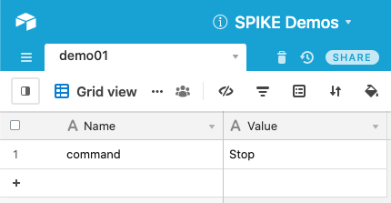
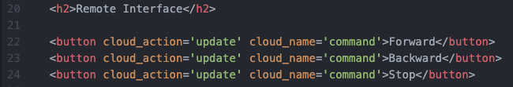
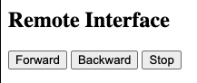
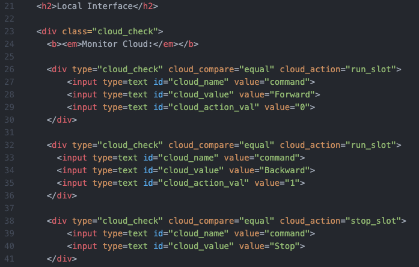
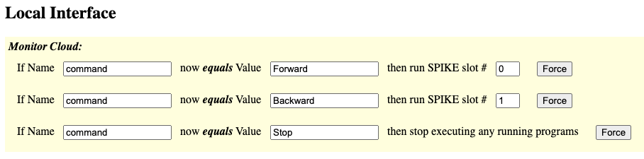

Demo 01: Simple Buttons
This demo shows simple buttons that activate code within SPIKE Prime Slots.
Documentation
Be sure to view the overall Documentation for configuring
the cloud storage (API key, Base ID, etc) and for more information on how the entire system works.
Airtable Setup
The "Name" column has an entry "command" that will hold the different
commands being sent by the buttons. The "Value" can be "Forward",
"Backward", or "Stop".

Remote Page Setup
Service Dock
The remote page has the Airtable Service Dock element. Make sure to
update the tablename attribute to match your table name.

Remote Interface
These simple HTML buttons will "update" the Airtable data "command" to be
"Forward", "Backward", or "Stop" respectively.

This is how these three buttons will look on the Remote Page:

Local Page Setup
Service Dock
The local page has both the Airtable Service Dock element (make sure
to update the tablename attribute to match your table name).
There is also a single SPIKE Prime Service Dock element.

Local Interface
The local interface is set up to monitor the "command" value to
see if it changes to now equal "Forward", "Backward", or "Stop".
In the case of the first two, it'll run whatever MicroPython program
is stored on the SPIKE Prime Hub in Slots #0 and #1 respectively. If the
"Stop" value is detected, it'll stop the execution of any running programs.

This is how these three "cloud check" elements will look on the Local Page:

SPIKE Prime MicroPython Code
Example Code for SPIKE Prime Hub Slot #0:
# MicroPython for LEGO Hardware (LEGO Education's SPIKE Prime)
from spike import PrimeHub, Motor
from spike.control import wait_for_seconds
# motor connected to A:
my_motor = Motor('A')
my_motor.start(50) # forward
wait_for_seconds(2)
my_motor.stop()
Example Code for SPIKE Prime Hub Slot #1:
# MicroPython for LEGO Hardware (LEGO Education's SPIKE Prime)
from spike import PrimeHub, Motor
from spike.control import wait_for_seconds
# motor connected to A:
my_motor = Motor('A')
my_motor.start(-50) # backward
wait_for_seconds(2)
my_motor.stop()
Demo 01 Quick Links:
Return back to the main homepage.